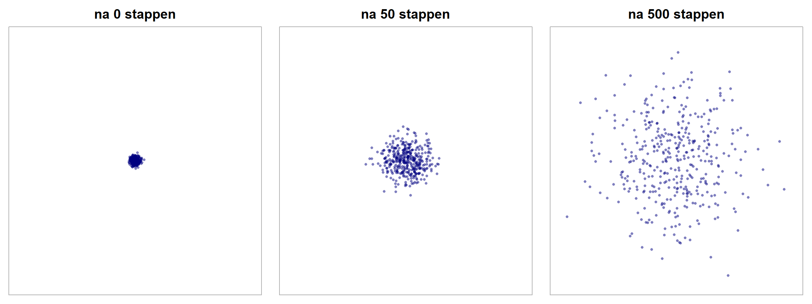
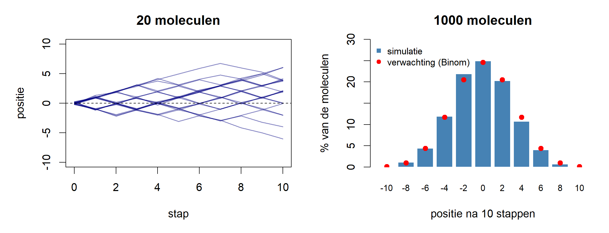
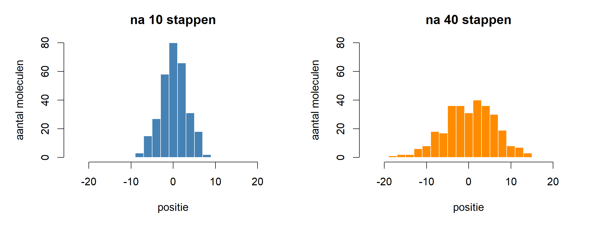
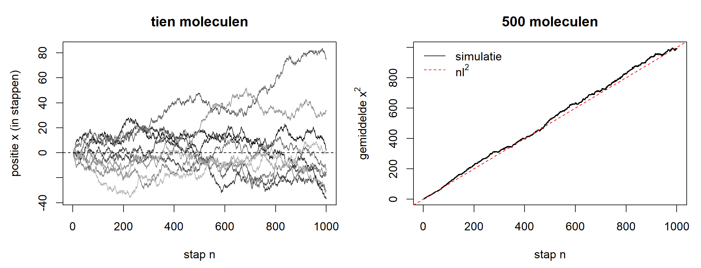
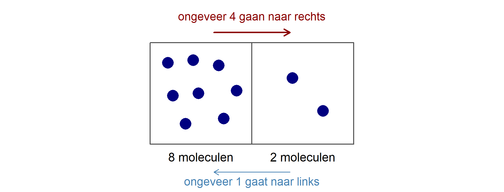
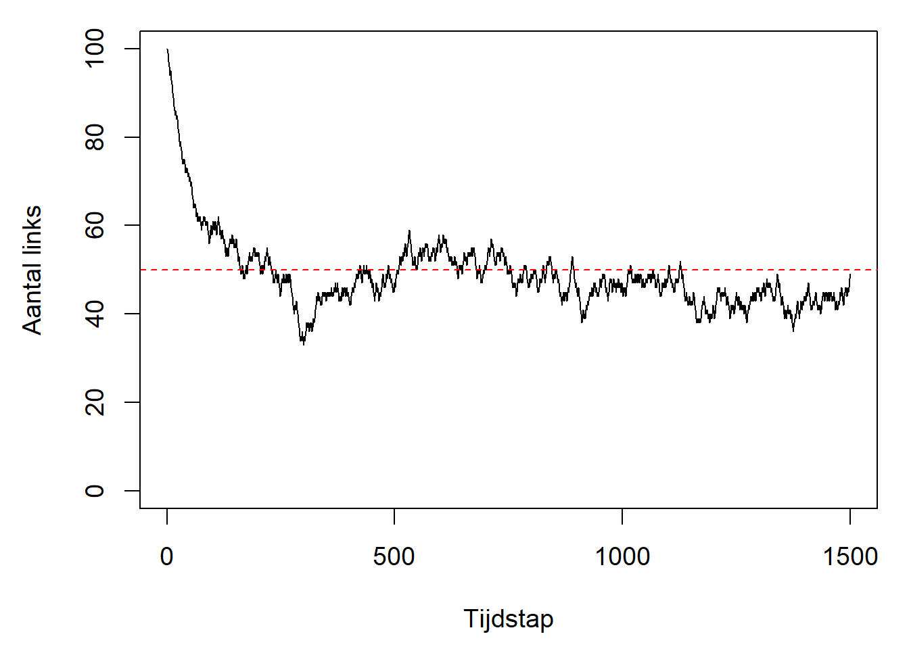
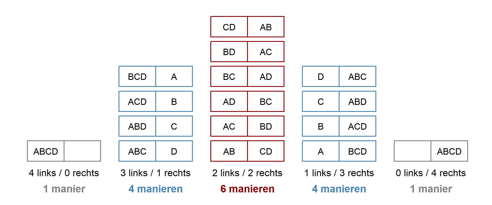
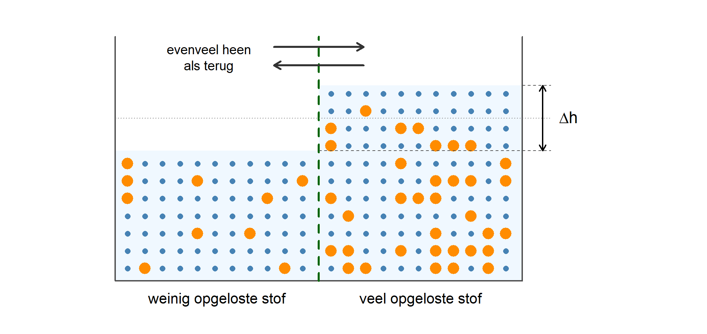

Van munt opgooien naar diffusie en osmotische druk
Wat denk je?.
Hoe lang doet een glucosemolecuul erover om door diffusie 1 meter af te leggen?
A. ongeveer 1 seconde
B. ongeveer 1 uur
C. ongeveer 1 dag
D. ongeveer 1 jaar
E. ongeveer 20 jaar
Antwoord: ongeveer 18 jaar
Door één cel (10 µm): ongeveer een twintigste seconde
Over 1 meter: ongeveer 18 jaar
Diffusie verloopt niet lineair met de afstand. 1 meter is \(10^5\) keer zo ver als 10 µm, maar duurt ongeveer \(10^{10}\) keer zo lang.
Een embryo heeft de eerste dagen geen hart en geen bloedvaten. Alles beweegt door diffusie en transport over membranen.
Vandaag:waarom diffusie en osmose gebeuren, en hoe we dat stochastische kunnen begrijpen.
Drie vragen
Waarom verspreiden moleculen zich?
Waarom stopt dat bij een gelijke verdeling, en is dat evenwicht een statische toestand
Wat als de opgeloste stof niet door het membraan kan: hoe ontstaat dan een evenwicht?
Belangrijk
Het antwoord: toeval en tellen. Er bestaat geen kracht die moleculen gericht naar de lage concentratie duwt.
1. Waarom verspreiden moleculen zich?
Wat je ziet: een druppel inkt

Elk molecuul zet zelf willekeurige stapjes. Niemand stuurt, en toch wordt de wolk breder in dit 2D vlak.
Waarom: botsen en munt opgooien
Een opgelost molecuul wordt voortdurend gebotst door watermoleculen
Het verandert biljoenen keren per seconde van richting
Het heeft geen idee waar de andere moleculen zijn, en geen geheugen: elke stap is onafhankelijk van de vorige
Het eenvoudigste model: elke tijdstap \(\tau\) zet het molecuul een stap \(\ell\).
kop: één stap naar rechts (\(+\ell\))
munt: één stap naar links (\(-\ell\))
Dit is een random walk in één dimensie.
Simulatie: 10 keer een munt opgooien.

In de histogram, op 0 25 % (verwacht 25 %). Alle 10 stappen naar dezelfde kant, dan 1 van de 1000 moleculen (verwacht \((\tfrac{1}{2})^{10} + (\tfrac{1}{2})^{10} \approx 0{,}2\,\%\): alles links of alles rechts).
Na 10 en na 40 stappen (werpen van munt)

Gemiddeld sta je op 0, maar de spreiding groeit. Hoe snel? Dat gaan we nu uitrekenen.
\(D\) vat het toeval samen in één getal: stapgrootte\(\ell\) en staptijd\(\tau\)
De factor 2 is een afspraak, zodat dezelfde \(D\) straks in de wet van Fick staat
Wat zijn \(\ell\) en \(\tau\) voor een echt molecuul?
\(\tau\): de tijd waarin een molecuul zijn richting vergeet door botsingen met watermoleculen
\(\ell\): de afstand die het in die tijd aflegt
Voor glucose in water bij 37 °C:
orde van grootte
staptijd \(\tau\)
\(10^{-13}\) s: tien biljoen stappen per seconde
stapgrootte \(\ell\)
\(0{,}01\) nm: een tiende van een atoom
Piepkleine, razendsnelle stapjes. Toch komt het molecuul in 1 seconde zo’n 30 µm ver: \(n\ell^2 \approx 10^{13} \times (10^{-11}\text{ m})^2 = 10^{-9}\) m².
De details van \(\ell\) en \(\tau\) doen er niet toe; alleen de combinatie \(D = \ell^2/2\tau\) telt.
Toeval geeft een vaste wet

Elk molecuul afzonderlijk is onvoorspelbaar, maar het gemiddelde over veel moleculen volgt precies \(\langle x^2 \rangle = n\ell^2\) (universaliteit)
Twee keer zo ver, vier keer zo lang
De typische afstand is \(L = \sqrt{\langle x^2 \rangle}\), dus
\[
L^2 \approx 2Dt
\qquad\Longleftrightarrow\qquad
t \approx \frac{L^2}{2D}
\]
afstand
tijd
1×
1×
2×
4×
10×
100×
1000×
1 000 000×
In 2D en 3D wordt de factor 2 een 4 en een 6
Een kanaal is eendimensionaal
Twee keer zo ver blijft vier keer zo lang
Hoe groot is \(D\)? Stokes–Einstein
De stapjes worden bepaald door warmte en wrijving:
\[
D = \frac{\ell^2}{2\tau} = \frac{kT}{6\pi\eta r}
\]
Boven de streep:\(kT\), thermische energie: warmte drijft de beweging aan
Onder de streep:\(6\pi\eta r\), wrijving met de vloeistof (viscositeit \(\eta\), straal \(r\)): wrijving remt
Een eiwit met 1000 keer zo groot volume heeft maar 10 keer zo grote straal, en diffundeert maar 10 keer zo langzaam.
Getallen
Molecuul
D (µm²/s)
door een cel (10 µm)
1 mm
1 cm
1 m
zuurstof
1900
0,026 s
4,3 min
7,2 uur
8,2 jaar
glucose
870
0,058 s
9,6 min
16 uur
18 jaar
eiwit (~50 kDa)
130
0,38 s
1,1 uur
4,4 dagen
120 jaar
Water, 37 °C, afstand in één richting. Binnen een cel snel, over millimeters traag, over centimeters onbruikbaar.
Gevolgen: eencelligen en platwormen zijn klein of plat; bij gewervelde embryo’s werkt het hart als eerste orgaan; planten hebben bulk flow in xyleem en floëem.
Van toeval naar stroom: Fick’s wet.

Elk molecuul heeft 50 % kans om over te steken. Netto gaan er toch 3 naar rechts, alleen omdat er links meer moleculen zijn.
De wet van Fick, met dezelfde \(D\)
Twee laagjes met dikte \(\ell\) en oppervlak \(A\):
Per stap \(\tau\) springt de helft naar de andere kant: netto \(\tfrac{1}{2}(N_L - N_R)\)
Flux = aantal per oppervlak per tijd: \(J = \dfrac{N_L - N_R}{2A\tau}\)
Volume van een laagje is \(A\ell\), dus \(N_L - N_R = A\ell\,(C_L - C_R)\)
De middens van de laagjes liggen een afstand \(\ell\) uit elkaar: \(C_L - C_R \approx -\ell\,\dfrac{\partial C}{\partial x}\)
Fick vond deze wet in 1855 als beschrijving van wat hij mat. Pas in 1905 liet Einstein zien dat ze volgt uit willekeurige moleculaire stappen, toen nog niet iedereen geloofde dat moleculen bestaan.
Wat zegt de wet van Fick?
\[
J = -D\,\frac{\partial C}{\partial x}
\]
De stroom is evenredig met hoe steil de concentratie verandert
Als \(\partial C/\partial x = 0\), dan \(J = 0\): evenwicht. Overal even vol, dus geen reden om te stromen
Over een dun membraan wordt de helling het verschil: \(J = P\,(C_1 - C_2)\)
Belangrijk
De kans per molecuul om over te steken is altijd gelijk. Er is alleen een netto stroom omdat er aan één kant meer moleculen zijn.
Maar waarom altijd naar de gelijke verdeling?
De wet van Fick beschrijft de stroom, maar zegt niet waarom een systeem altijd bij de gelijke verdeling uitkomt, en nooit vanzelf terug naar alles aan één kant.
Daarvoor kijken we naar de kans op elke mogelijke verdeling. Zo kunnen we toestanden vergelijken: welke is het waarschijnlijkst?
2. Waarom stopt het bij een gelijke verdeling?
Wat je ziet: 100 moleculen

Start: alles links
Elke stap wisselt één willekeurig molecuul van kant
Geen kracht, alleen toeval
Het systeem loopt naar 50 links en 50 rechts, en schommelt daar.
Tellen met 4 moleculen

Alle 16 rangschikkingen zijn even waarschijnlijk. 2 links / 2 rechts kan op de meeste manieren.
De binomiaalcoëfficiënt
Het aantal manieren om \(n_L\) van de \(N\) moleculen links te hebben:
Links neemt de entropie iets af, rechts neemt ze meer toe
Een extra watermolecuul levert vooral nieuwe rangschikkingen op als er veel opgeloste deeltjes zijn om mee te mengen
Opmerking
Water wordt niet aangetrokken. Het water lost de ongelijkheid op die de opgeloste stof zelf niet kan oplossen.
Welke kant op?
Begin: links 1 opgelost en 5 water, rechts 2 opgelost en 4 water: \(6 \times 15 = 90\) rangschikkingen.
één watermolecuul gaat
links
rechts
hele systeem
naar rechts
\(\binom{5}{1} = 5\)
\(\binom{7}{2} = 21\)
\(105\)
naar links
\(\binom{7}{1} = 7\)
\(\binom{5}{2} = 10\)
\(70\)
Naar rechts: meer rangschikkingen (105 > 90)
Naar links: minder (70 < 90)
Daarom gaat water netto naar de kant met meer opgeloste stof
Wanneer stopt het?

De hogere waterkolom duwt water terug. De concentraties zijn nog steeds niet gelijk.
Entropie tegen druk
Elk watermolecuul dat naar rechts gaat:
wint entropie: hoe meer opgeloste deeltjes rechts (en hoe minder links), hoe meer nieuwe rangschikkingen, zoals in het rooster. De winst is evenredig met het verschil in het aandeel opgeloste deeltjes (molfractie): \[
\Delta S \approx k\,(x_{s,\text{rechts}} - x_{s,\text{links}})
\]
moet omhoog tegen de druk: dat kost een energie \(\Pi \cdot v\) (\(v\) is het volume van één watermolecuul)
Bij temperatuur \(T\) is een entropiewinst \(\Delta S\) evenveel waard als een energie \(T\,\Delta S\).
Evenwicht: van entropie naar druk
Winst en kosten zijn precies gelijk:
\[
T\,\Delta S = \Pi\, v
\quad\Longrightarrow\quad
\Pi = kT\,\frac{x_{s,\text{rechts}} - x_{s,\text{links}}}{v}
\]
\(x_s / v\) is het aantal opgeloste deeltjes per volume. Per mol:
Deel de evenwichtsvoorwaarde \(T\,\Delta S = \Pi\,v\) door \(T\,v\):
\[
\underbrace{\frac{\Pi}{T}}_{\text{druk / temperatuur}}
= \underbrace{\frac{\Delta S}{v}}_{\text{entropiewinst per volume verplaatst water}}
= R\,\Delta C
\]
Het osmolariteitsverschil \(\Delta C\) zegt dus hoeveel entropie het systeem wint per m³ water dat naar de geconcentreerde kant gaat. De temperatuur \(T\) zet die entropiewinst om in een druk: \(\Pi = T \cdot R\,\Delta C\).
Voorbeeld: bij \(\Delta C = 300\) mOsm/L \(= 300\) mol/m³ is de entropiewinst \(R\,\Delta C = 8{,}314 \times 300 \approx 2500\) J/(K·m³), ongeveer 2,5 J/K per liter verplaatst water. Maal \(T = 310\) K geeft \(\Pi \approx 0{,}77\) MPa.
\(R\), \(k\) en de eenheden
\(R = 8{,}314\) J/(mol·K) is de gasconstante: de constante van Boltzmann per mol.
\[
R = N_A\,k \qquad (N_A = 6{,}022 \cdot 10^{23} \text{ per mol})
\]
\(kT\): thermische energie van één molecuul. \(RT\): van een mol (bij 37 °C: 2,58 kJ/mol).
Druk is energie per volume. Gebruik \(C\) in mol/m³ (1 mM = 1 mol/m³). De formule lijkt op de gaswet \(PV = nRT\): opgeloste deeltjes gedragen zich als gasdeeltjes.
Water stroomt van hoge naar lage \(\Psi\), tot \(\Psi\) aan beide kanten gelijk is.
Cel zonder wand (dierlijke cel)
zwelt op tot de concentraties gelijk zijn
of tot ze barst
Cel met wand (plantencel)
zwelt op tot de wand terugduwt: turgordruk
concentraties blijven verschillend
Hoe sterk is osmose?
Situatie
Osmotische druk
Even hoog als een waterkolom van
cytoplasma (300 mOsm) tegen zuiver water
0,77 MPa
79 m
verschil van 1 mOsm
2,6 kPa
26 cm
Vergelijk: turgor in een plantencel is ongeveer 0,5 MPa. Osmose is een krachtige motor.
Denkvraag
Een rode bloedcel in gedestilleerd water zwelt op en barst.
Leg uit waarom, zonder het woord “aantrekken” te gebruiken.
Gebruik: kans, aantal watermoleculen, rangschikkingen, volume, druk.
Een antwoord:
Binnen zijn per volume minder watermoleculen dan in het zuivere water buiten
Elk watermolecuul heeft dezelfde kans om door het membraan te gaan, dus er gaan er meer naar binnen dan naar buiten: het systeem wint daarbij rangschikkingen
Het volume van de cel neemt toe en de inhoud verdunt, maar de concentraties worden nooit gelijk: buiten blijft het zuiver water
Stoppen kan alleen door tegendruk: \(\Pi = \Delta C\,RT\) met \(\Delta C = 300\) mOsm/L, ongeveer 0,8 MPa. Een cel zonder wand kan die niet leveren: hij barst. Een plantencel overleeft het wel dankzij de celwand (turgor)
Afsluiting
Drie vragen, drie antwoorden
Waarom verspreiden moleculen zich? Door toeval. Elke stap voegt gemiddeld \(\ell^2\) toe aan \(\langle x^2 \rangle\), dus \(\langle x^2 \rangle = 2Dt\) met \(D = \ell^2/2\tau = kT/6\pi\eta r\). Dezelfde \(D\) staat in de wet van Fick.
Waarom stopt het bij een gelijke verdeling? Die toestand kan op de meeste manieren: maximale entropie \(S = k \ln W\) (tweede hoofdwet). In evenwicht zijn de stromen gelijk.
Waarom stroomt water naar de opgeloste stof? Het hele systeem wint rangschikkingen, evenredig met het verschil in opgeloste deeltjes. In evenwicht weegt die entropiewinst op tegen de druk: \(\Pi = \Delta C\,RT\).
In het hoofdstuk verder: wanneer kost transport energie? Vrije energie, ATP, kanalen en pompen (vraag 4).
Opdracht: het embryo pompt zichzelf op
Een muizenembryo vormt na ongeveer drie dagen een vochtgevulde holte, het blastocoel.
Cellen pompen Na⁺ naar de holte
Water volgt door osmose
De druk bepaalt mee hoe groot het embryo wordt en welk lot de cellen krijgen
Jullie rekenen uit:
hoe lang diffusie in het embryo duurt
hoeveel osmotisch verschil nodig is
wat het pompen kost (zie vraag 4 in het hoofdstuk)
waarom dit een stationaire toestand is en geen evenwicht
Zie het hoofdstuk Toeval, entropie en transport over membranen in het portfolio.